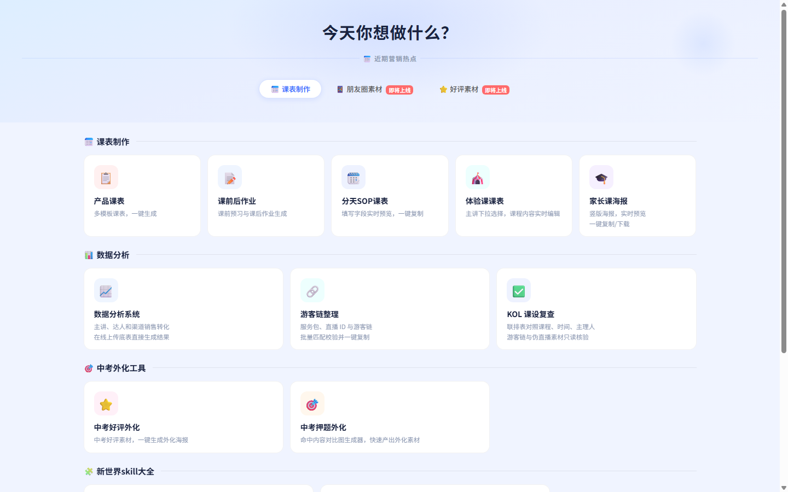
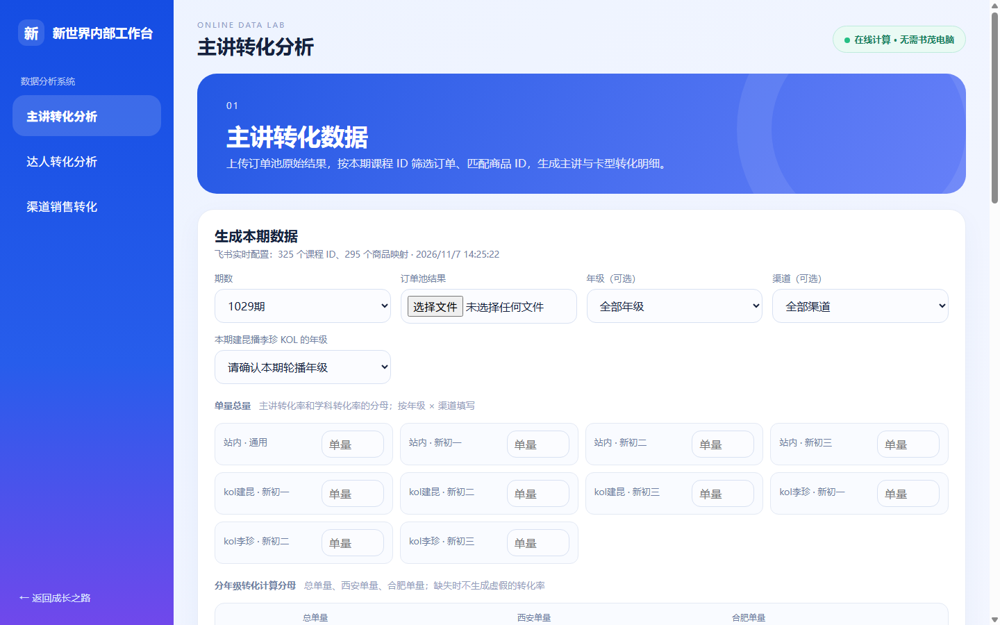
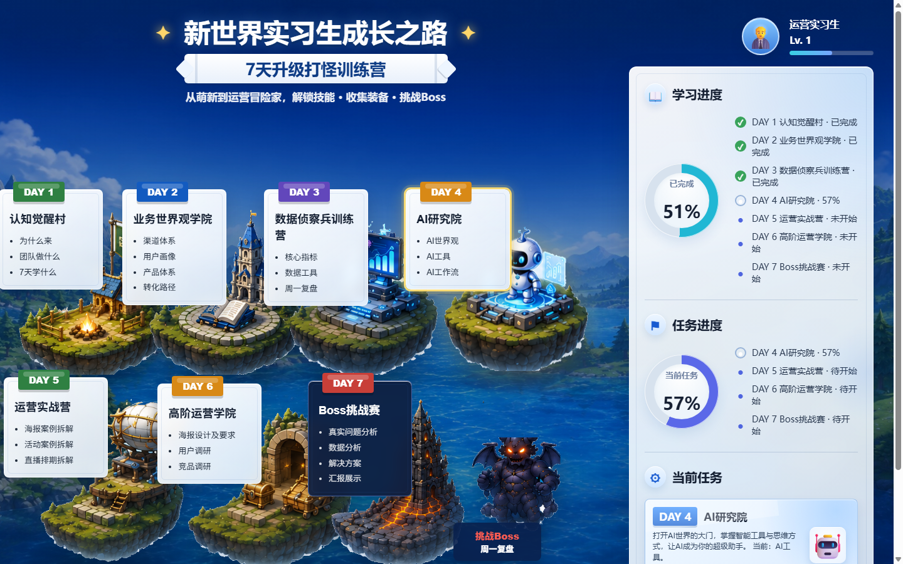

短视频作品 / HEEL 军团
78万播放一条作品，78 万次播放。
策划 · 拍摄 · 剪辑 · 发布
你好，我是陈佳茜。
在网易有道，我把销转波动拆成可核查的漏斗问题，再把分析规则做成团队能用的工具；也从家长决策出发，交付脚本、分镜与成片。
AI 加快制作，人的判断决定交付质量。
01 / PROOF FIRST
网易有道的分析、工具和成片是主线；内容传播与电商项目展示我对用户和增长的理解。
02 / THE WAY I THINK
网易有道 · 新世界初中业务
独立撰写周会与 MOS 底稿，把波动拆成可执行的判断
0930 与 1004 两期对比，市场端报名订单从 1,866 降至 1,304，E1 ROI 从 2.25 降至 1.57。只看大盘，无法判断是流量、课程体验，还是销售承接。
我校准分母并拆开李珍达人销售入组样本：到课率 52.8% → 51.3%，E1 付费人头率 4.33% → 1.97%。付费端降幅更明显，因此优先排查体验后的需求诊断、权益说明与购买决策。
我把分析变成周会可执行的核查清单：按年级、来源、基地和销售拆同口径漏斗；抽查已到课未成交对话；逐项核对测评解释、学生意愿与课程权益表达。
我把期次、渠道、年级与销售承接的核查路径写进周会底稿，也把字段、分母、异常和复核规则沉淀到数据工具。团队之后可以沿同一口径复查，不必每次从零拆表。
0424、0917、1016 三版组会底稿及 10 月初中 MOS 底稿均由我撰写，用于周会经营复盘。我连续追踪目标与实际单量、ROI、LTV、到课和付费漏斗，再把波动翻译成团队下一步要核查的动作。
03 / REAL WORK, OPEN IT
从业务规则、页面到交付入口，我把重复工作做成团队能直接使用的工具。点击卡片查看实际页面。

我从一线流程拆出字段口径、异常分支与验收规则，完成页面和工具制作，交付团队接入统一工作台。课程物料、数据分析和课前支持由此有了共同入口。
打开真实工作台 ↗
主讲、达人、渠道三类转化分析从约 2 天压缩至约 1 小时；结果可以按字段与分母回查。
进入平台 ↗
把新人前 7 天的任务与业务知识组织成路径，减少交接时反复解释。
打开地图 ↗我的做法：先把运营 SOP 写成字段、计算规则和异常分支，再制作页面、设置人工复核节点，交付团队使用。
04 / FINISHED FILMS
我按不同年级的家长决策问题设计脚本和镜头。成片已交销售端用于课前沟通，也用于抖音、微信短视频和小红书等渠道宣传；点击即可播放。
从中考阶段的学习节奏，到李珍的“多题归一”方法、师资协同与进直播间的具体行动，内容围绕家长决策顺序展开。
初中适应期：从学习变化建立家长共鸣。
02:01 · 成片同一年级，依据配课阵容调整内容表达。
02:01 · 成片聚焦知识分化、方法理解与课前准备。
02:18 · 成片从年级问题到教师信任与课程行动入口。
01:58 · 成片我的内容方法：先抓住家长关切，再把主讲方法、师资证据和行动入口排成一条决策路径，最后完成分镜、素材核对与版本交付。
这条 40 秒的竖屏带货片从购买理由出发，用材质对比与使用场景证明卖点；我把创意拆成分镜，再用 AIGC 完成成片。
查看对应分镜原图 ↗05 / ORIGINAL ARTIFACTS
项目物料、分镜与执行过程的原始作品页；点击图片可放大。
从栏目结构、选题排期到发布复盘，形成持续更新的内容运营节奏。
故事版前半段：钩子、材质与功能证明。
故事版后半段：多场景使用与行动引导。
我主持助农直播项目，完成走访调研、传播物料和直播执行；3 场累计约 1,860 单、约 9.9 万元 GMV。
将场控、脚本、排期与售后规则沉淀成 SOP，让下一场直播可以复用。
活动结果和执行文档。
STP、4P 与预算的可视化表达。
06 / BUSINESS & RESEARCH
四年全英文授课训练了资料检索、写作与表达；财报拆解、SPSS 和 SQL 则让我在运营中更快看懂经营结构、校准口径并提出可验证的判断。
把研究方法带进业务现场：先看收入、渠道与用户结构，再决定要验证哪个增长问题。
三只松鼠与养元饮品：结合利润表、现金流、产品和渠道，写出有判断的商业分析稿。
英文财务论文、管理学案例、市场营销方案与个人 blog，展示资料检索、论证和呈现。
微众银行数字金融研究与 GHRM 元分析：从研究边界、资料整理到模型与稳健性判断；具备 SPSS 和 SQL 数据分析能力。
07 / TRANSFERABLE WORK
换了行业和任务，我始终把用户、数字、执行和复盘连在一起。
每次先问：数据从哪来？用户在哪一步犹豫？哪些规则和异常必须由人确认？这些问题的答案决定我如何做内容、分析和工具。
08 / CONTACT
策略运营、增长运营、AI 应用、内容与产品运营实习机会，欢迎通过以下邮箱联系。地址可直接选中，也可点击复制。
如设备未设置默认邮件应用，点击“复制邮箱”后粘贴到任意邮箱即可。